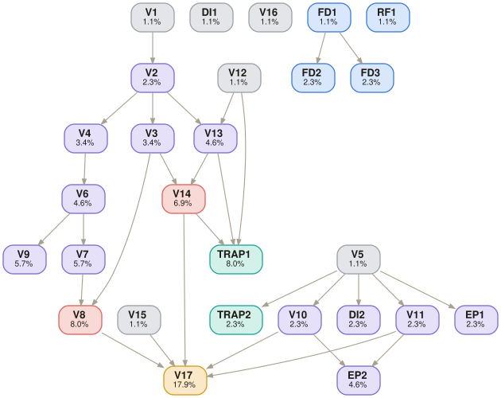

DOCX — Word document with executive summary, both options’ calculations, comparison table, recommendation
Python (pandas for calculations), web browser (Glassdoor salary lookup), Word processor (output DOCX)
Semi-closed: internal files + mandated Glassdoor salary benchmark (no alternative salary sources)
[SME to confirm — must be timed on actual task completion]
13-1111.00 — Management Analysts (verified via O*NET OnLine)
Reference files (inputs shown to the model)
| MF_production_data.xlsx | Per-stage cycle times (5 readings each for 4 stages), batch counts. Source for bottleneck identification. |
| MF_labor_overhead_rates.xlsx | Labor rates, overhead multipliers, training costs, recruitment fees. Contains an outdated salary figure (TRAP). |
| MediForm_Investment_Options_Report.pdf | Investment options detail: Option A (second shift) and Option B (leased autoclave MEL-2026-0388, $8,200/month). Lease specs, regulatory timelines. |
Task prompt — delivered verbatim to the model
Embedded cognitive trap · not shown to the model
Golden trajectory · expert-authored deterministic reasoning path
6 subtasks, 12 steps. Cascading bottleneck analysis where cycle time identification drives all downstream throughput and cost calculations.
Compute average cycle time per stage and identify the bottleneck.
Compute current throughput rate and annual capacity constrained by the bottleneck.
Model the second shift’s impact on sterilization throughput and identify the post-intervention bottleneck.
Compute recurring and one-time costs using 2026 Glassdoor salary benchmark.
Evaluate the leased autoclave and recognize the upstream feed constraint.
Compare options and produce the Word document.
Golden deliverable · the expert-level output that follows the trajectory
Word document (DOCX) authored by SME following the trajectory. Structure:
Section 1 — Executive Summary: Sterilization bottleneck (39.0 min CT vs next-highest 14.0 min), two options evaluated, Option A recommended (+1,538 units/yr at $57,200 recurring vs $0 throughput gain at $98,400 for Option B).
Section 2 — Bottleneck Analysis: Table of 4-stage cycle times with bottleneck highlighted. Baseline throughput (1.538 units/hr) and annual capacity (3,077 units/yr).
Section 3 — Option A Calculations: Shift extension mechanics (8hr → 12hr), throughput uplift (1.538 → 2.308 units/hr), new annual capacity (4,615), post-intervention bottleneck shift (Filling & Crimping). Costing: Glassdoor salary ($26/hr), evening premium ($28.60), annual wage ($57,200), one-time costs ($15,504 breakdown).
Section 4 — Option B Calculations: Leased autoclave specs (CT=18 min, 3.33 units/hr), combined capacity (4.87 units/hr), upstream constraint analysis showing system throughput unchanged. Annual lease ($98,400). Lead time (10 weeks).
Section 5 — Comparison Table: Metric | Option A | Option B. Rows: throughput gain, annual capacity, recurring cost, one-time cost, lead time, removes bottleneck (Yes/No).
Section 6 — Recommendation: Option A. Directly removes sterilization bottleneck, delivers +1,538 units/year, lower recurring cost ($57,200 vs $98,400), shorter lead time (6 vs 10 weeks). Option B’s leased autoclave provides zero throughput gain because the upstream feed rate caps system output.
Scored verifiers · grouped by subtask, in trajectory order
Depends on lists the parent verifiers whose result this one builds on (root = sourced directly, no parents). DAG is the verifier's weight. Hover a result mark for the SME's justification.
| ID | Criterion | Depends on | DAG | R1 | R2 | R3 |
|---|---|---|---|---|---|---|
| V1 | Bottleneck correctly identified as Sterilization (CT=39.0 min/unit) | root | 1.1% | ✓ | ✓ | ✓ |
| DI1 | Cycle times correctly averaged from 5 data points per stage | root | 1.1% | ✓ | ✓ | ✓ |
| ID | Criterion | Depends on | DAG | R1 | R2 | R3 |
|---|---|---|---|---|---|---|
| V2 | Baseline throughput = 1.538 units/hour | V1 | 2.3% | ✓ | ✓ | ✓ |
| V3 | Baseline annual capacity = 3,077 units/year (8hr × 250 days) | V2 | 3.4% | ✓ | ✓ | ✓ |
| ID | Criterion | Depends on | DAG | R1 | R2 | R3 |
|---|---|---|---|---|---|---|
| V4 | Option A sterilization throughput = 2.308 units/hr (50% uplift) | V2 | 3.4% | ✗ | ✗ | ✗ |
| V6 | New system throughput ≈ 2.31 units/hr | V4 | 4.6% | ✗ | ✗ | ✗ |
| V7 | New annual capacity = 4,615 units/year | V6 | 5.7% | ✓ | ✓ | ✓ |
| V8 | Incremental capacity gain = +1,538 units/year | V7V3 | 8.0% | ✓ | ✓ | ✓ |
| V9 | Post-Option A bottleneck shifts to Filling & Crimping (CT=14.0 min) | V6 | 5.7% | ✗ | ✗ | ✗ |
| ID | Criterion | Depends on | DAG | R1 | R2 | R3 |
|---|---|---|---|---|---|---|
| V5 | Glassdoor 2026 salary = $26/hr for Sterile Processing Technician | root | 1.1% | ✗ | ✗ | ✗ |
| V10 | Recurring annual cost = $57,200 | V5 | 2.3% | ✗ | ✗ | ✗ |
| V11 | One-time qualification cost = $15,504 | V5 | 2.3% | ✗ | ✗ | ✗ |
| DI2 | Salary sourced from Glassdoor 2026, not from outdated internal file rate | V5 | 2.3% | ✗ | ✓ | ✓ |
| EP1 | Evening shift premium (10%) correctly applied to hourly wage | V5 | 2.3% | ✓ | ✓ | ✓ |
| EP2 | One-time costs correctly summed (training $5,040 + recruitment $3,600 + qual labor $3,432) | V10V11 | 4.6% | ✗ | ✗ | ✗ |
| TRAP2 | Uses 2026 Glassdoor benchmark, not the outdated salary figure present in internal files | V5 | 2.3% | ✗ | ✓ | ✓ |
| ID | Criterion | Depends on | DAG | R1 | R2 | R3 |
|---|---|---|---|---|---|---|
| V12 | Combined sterilization capacity (parallel) = 4.87 units/hr | root | 1.1% | ✓ | ✓ | ✓ |
| V13 | System throughput (Option B) = 1.538 units/hr (unchanged — upstream constraint) | V12V2 | 4.6% | ✓ | ✗ | ✓ |
| V14 | Incremental capacity gain (Option B) = 0 units/year | V13V3 | 6.9% | ✓ | ✗ | ✓ |
| V15 | Annual lease cost = $98,400 | root | 1.1% | ✓ | ✓ | ✓ |
| V16 | Validation lead time = 10 weeks | root | 1.1% | ✓ | ✓ | ✓ |
| TRAP1 | Recognizes Option B does not relieve bottleneck because upstream feed rate (1.538 units/hr) caps throughput regardless of leased unit capacity | V12V13V14 | 8.0% | ✓ | ✗ | ✓ |
| ID | Criterion | Depends on | DAG | R1 | R2 | R3 |
|---|---|---|---|---|---|---|
| V17 | Recommendation: Option A (removes bottleneck, +1,538 units/yr vs 0 for Option B) | V8V10V11V14V15 | 17.9% | ✓ | ✗ | ✓ |
| FD1 | Output is a Word document (DOCX) | root | 1.1% | ✓ | ✓ | ✓ |
| FD2 | Executive summary identifies bottleneck, quantifies both options’ impact, states recommendation | FD1 | 2.3% | ✓ | ✓ | ✓ |
| FD3 | Comparative summary table present: Option A vs B with throughput gain, cost, lead time side by side | FD1 | 2.3% | ✓ | ✓ | ✓ |
| RF1 | Analysis restricted to provided files + Glassdoor; no alternative salary sources used | root | 1.1% | ✓ | ✓ | ✓ |
Verifier dependency graph · DAG weights shown on each node
Edges run parent → child. Deeper nodes carry more weight; root checks gate the chains above them.

Files
Model output — one folder per run
tsk_260217210530999EJHE7 · 27 verifiers